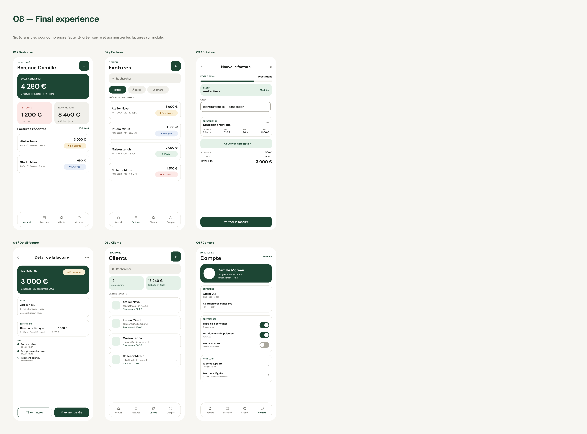

Make daily invoicing manageable on a phone.
Keep essential totals and actions visible without compressing a desktop dashboard into 390 pixels.
01 · Overview — Concept design · 2026
A mobile-first experience that helps freelancers and small businesses create, organise and track invoices with less friction.
Context
This concept was informed by an analysis of an earlier invoice-management tool. The foundation was functional, but its repetitive interface and fragmented routes made everyday actions feel heavier than necessary.
Design challenge
Keep essential totals and actions visible without compressing a desktop dashboard into 390 pixels.
Let a user create a missing client inside the invoice flow, then return with context preserved.
Use hierarchy, status language and reusable patterns to make every state feel part of the same system.
Information architecture
Cash overview, alerts and direct actions
Search, filter, create and track
Directory, profiles and related invoices
Business, payment and notification settings

Key user flow
Context continuityThe new client returns selected inside the invoice.
Progressive disclosureOnly the current decision is foregrounded.
Visible feedbackLoading, success and selected states explain every change.
Wireframes
The mid-fidelity pass defined content priority, reachable actions and screen-to-screen continuity before visual polish. It deliberately includes realistic invoice data and meaningful states.
Dashboard → invoices → creation → detail → clients → account
Design system
Direct and compact at mobile sizes.
One deep green for action and orientation.
Soft containers; pill controls only where state changes.
Default, pressed, loading, success, error and empty.


Final experience
The final interface keeps monetary information calm and legible, while green action zones create a clear rhythm from overview to completion.



Mobile UI craft · Interaction design · System thinking